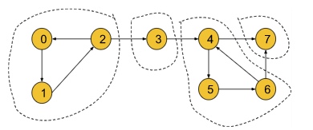
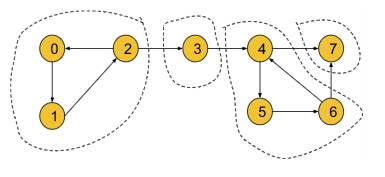

Problem Statement: Given a Directed Graph with V vertices (Numbered from 0 to V-1) and E edges, Find the number of strongly connected components in the graph.
Input Format:Result: 3
Explanation: Three strongly connected components are marked below:
Example 2:
Input Format:Result: 4
Explanation: Four strongly connected components are marked below:
Solution
Disclaimer: Don't jump directly to the solution, try it out yourself first. Problem Link.
Solution:
In this article, we are going to discuss strongly connected components(SCC) and Kosaraju’s algorithm. In an interview, we can expect two types of questions from this topic:
Find the number of strongly connected components of a given graph.
Print the strongly connected components of a given graph.
In this article, we are going to discuss the logic part in detail and once the logic part is clear, these two types of questions can be easily solved.
Strongly connected components(SCC) are only valid for directed graphs.
Strongly Connected Component(SCC):
A component is called a Strongly Connected Component(SCC) only if for every possible pair of vertices (u, v) inside that component, u is reachable from v and v is reachable from u.
In the following directed graph, the SCCs have been marked:

If we take 1st SCC in the above graph, we can observe that each node is reachable from any of the other nodes. For example, if take the pair (0, 1) from the 1st SCC, we can see that 0 is reachable from 1 and 1 is also reachable from 0. Similarly, this is true for all other pairs of nodes in the SCC like (0,2), and (1,2). But if we take node 3 with the component, we can notice that for pair (2,3) 3 is reachable from 3 but 2 is not reachable from 3. So, the first SCC only includes vertices 0, 1, and 2.
By definition, a component containing a single vertex is always a strongly connected component. For that vertex 3 in the above graph is itself a strongly connected component.
By applying this logic, we can conclude that the above graph contains 4 strongly connected components like (0,1,2), (3), (4,5,6), and (7).
Kosaraju’s Algorithm:
To find the strongly connected components of a given directed graph, we are going to use Kosaraju’s Algorithm.
Before understanding the algorithm, we are going to discuss the thought process behind it. If we start DFS from node 0 for the following graph, we will end up visiting all the nodes. So, it is impossible to differentiate between different SCCs.

Now, we need to think in a different way. We can convert the above graph into the following illustration:
By definition, within each SCC, every node is reachable. So, if we start DFS from a node of SCC1 we can visit all the nodes in SCC1 and via edge e1 we can reach SCC2. Similarly, we can travel from SCC2 to SCC3 via e2 and SCC3 to SCC4 via e3. Thus all the nodes of the graph become reachable.
But if we reverse the edges e1, e2, and e3, the graph will look like the following:
Now in this graph, if we start DFS from node 0 it will visit only the nodes of SCC1. Similarly, if we start from node 3 it will visit only the nodes of SCC2. Thus, by reversing the SCC-connecting edges, the adjacent SCCs become unreachable. Now, the DFS will work in such a way, that in one DFS call we can only visit the nodes of a particular SCC. So, the number of DFS calls will represent the number of SCCs.
Until now, we have successfully found out the process of getting the number of SCCs. But here, comes a new problem i.e. if we do not know the SCCs, how the edges will be reversed? To solve this problem, we will simply try to reverse all the edges of the graph like the following:
If we carefully observe, the nodes within an SCC are reachable from each one to everyone even if we reverse the edges of the SCC. So, the SCCs will have no effect on reversing the edges. Thus we can fulfill our intention of reversing the SCC-connecting edge without affecting the SCCs.
Now, the question might be like, if node 0 is located in SCC4 and we start DFS from node 0, again we will visit all the SCCs at once even after reversing the edges. This is where thestarting time and the finishing time concept will come in.
Now, we have a clear intuition about reversing edges before we move on to the starting and the finishing time concept in the algorithm part.
Algorithm:
The algorithm steps are as follows:
Sort all the nodes according to their finishing time: To sort all the nodes according to their finishing time, we will start DFS from node 0 and while backtracking in the DFS call we will store the nodes in a stack data structure. The nodes in the last SCC will finish first and will be stored in the last of the stack. After the DFS gets completed for all the nodes, the stack will be storing all the nodes in the sorted order of their finishing time.
Reverse all the edges of the entire graph: Now, we will create another adjacency list and store the information of the graph in a reversed manner.
Perform the DFS and count the no. of different DFS calls to get the no. of SCC: Now, we will start DFS from the node which is on the top of the stack and continue until the stack becomes empty. For each individual DFS call, we will increment the counter variable by 1. We will get the number of SCCs by just counting the number of individual DFS calls as in each individual DFS call, all the nodes of a particular SCC get visited.
Finally, we will get the number of SCCs in the counter variable. If we want to store the SCCs as well, we need to store the nodes in some array during each individual DFS call in step 3.
Note:
The first step is to know, from which node we should start the DFS call.
The second step is to make adjacent SCCs unreachable and to limit the DFS traversal in such a way, that in each DFS call, all the nodes of a particular SCC get visited.
The third step is to get the numbers of the SCCs. In this step, we can also store the nodes of each SCC if we want to do so.
Note: The sorting of the nodes according to their finishing time is very important. By performing this step, we will get to know where we should start our DFS calls. The top-most element of the stack will finish last and it will surely belong to the SCC1. So, the sorting step is important for the algorithm.
Note: If you wish to see the dry run of the above approach, you can watch the video attached to this article. Code:
#include <bits/stdc++.h>
using namespace std;
class Solution
{
private:
void dfs(int node, vector<int> &vis, vector<int> adj[],
stack<int> &st) {
vis[node] = 1;
for (auto it : adj[node]) {
if (!vis[it]) {
dfs(it, vis, adj, st);
}
}
st.push(node);
}
private:
void dfs3(int node, vector<int> &vis, vector<int> adjT[]) {
vis[node] = 1;
for (auto it : adjT[node]) {
if (!vis[it]) {
dfs3(it, vis, adjT);
}
}
}
public:
//Function to find number of strongly connected components in the graph.
int kosaraju(int V, vector<int> adj[])
{
vector<int> vis(V, 0);
stack<int> st;
for (int i = 0; i < V; i++) {
if (!vis[i]) {
dfs(i, vis, adj, st);
}
}
vector<int> adjT[V];
for (int i = 0; i < V; i++) {
vis[i] = 0;
for (auto it : adj[i]) {
// i -> it
// it -> i
adjT[it].push_back(i);
}
}
int scc = 0;
while (!st.empty()) {
int node = st.top();
st.pop();
if (!vis[node]) {
scc++;
dfs3(node, vis, adjT);
}
}
return scc;
}
};
int main() {
int n = 5;
int edges[5][2] = {
{1, 0}, {0, 2},
{2, 1}, {0, 3},
{3, 4}
};
vector<int> adj[n];
for (int i = 0; i < n; i++) {
adj[edges[i][0]].push_back(edges[i][1]);
}
Solution obj;
int ans = obj.kosaraju(n, adj);
cout << "The number of strongly connected components is: " << ans << endl;
return 0;
}
Output: The number of strongly connected components is: 3 (For example 1)
Time Complexity: O(V+E) + O(V+E) + O(V+E) ~ O(V+E) , where V = no. of vertices, E = no. of edges. The first step is a simple DFS, so the first term is O(V+E). The second step of reversing the graph and the third step, containing DFS again, will take O(V+E) each.
Space Complexity: O(V)+O(V)+O(V+E), where V = no. of vertices, E = no. of edges. Two O(V) for the visited array and the stack we have used. O(V+E) space for the reversed adjacent list.
import java.io.*;
import java.util.*;
//User function Template for Java
class Solution {
private void dfs(int node, int []vis, ArrayList<ArrayList<Integer>> adj,
Stack<Integer> st) {
vis[node] = 1;
for (Integer it : adj.get(node)) {
if (vis[it] == 0) {
dfs(it, vis, adj, st);
}
}
st.push(node);
}
private void dfs3(int node, int[] vis, ArrayList<ArrayList<Integer>> adjT) {
vis[node] = 1;
for (Integer it : adjT.get(node)) {
if (vis[it] == 0) {
dfs3(it, vis, adjT);
}
}
}
//Function to find number of strongly connected components in the graph.
public int kosaraju(int V, ArrayList<ArrayList<Integer>> adj) {
int[] vis = new int[V];
Stack<Integer> st = new Stack<Integer>();
for (int i = 0; i < V; i++) {
if (vis[i] == 0) {
dfs(i, vis, adj, st);
}
}
ArrayList<ArrayList<Integer>> adjT = new ArrayList<ArrayList<Integer>>();
for (int i = 0; i < V; i++) {
adjT.add(new ArrayList<Integer>());
}
for (int i = 0; i < V; i++) {
vis[i] = 0;
for (Integer it : adj.get(i)) {
// i -> it
// it -> i
adjT.get(it).add(i);
}
}
int scc = 0;
while (!st.isEmpty()) {
int node = st.peek();
st.pop();
if (vis[node] == 0) {
scc++;
dfs3(node, vis, adjT);
}
}
return scc;
}
}
class Main {
public static void main (String[] args) {
int n = 5;
int[][] edges = {
{1, 0}, {0, 2},
{2, 1}, {0, 3},
{3, 4}
};
ArrayList<ArrayList<Integer>> adj = new ArrayList<>();
for (int i = 0; i < n; i++) {
adj.add(new ArrayList<Integer>());
}
for (int i = 0; i < n; i++) {
adj.get(edges[i][0]).add(edges[i][1]);
}
Solution obj = new Solution();
int ans = obj.kosaraju(n, adj);
System.out.println("The number of strongly connected components is: " + ans);
}
}
Output: The number of strongly connected components is: 3 (For example 1)
Time Complexity: O(V+E) + O(V+E) + O(V+E) ~ O(V+E) , where V = no. of vertices, E = no. of edges. The first step is a simple DFS, so the first term is O(V+E). The second step of reversing the graph and the third step, containing DFS again, will take O(V+E) each.
Space Complexity: O(V)+O(V)+O(V+E), where V = no. of vertices, E = no. of edges. Two O(V) for the visited array and the stack we have used. O(V+E) space for the reversed adjacent list.
Special thanks to KRITIDIPTA GHOSH for contributing to this article on takeUforward. If you also wish to share your knowledge with the takeUforward fam, please check out this article. If you want to suggest any improvement/correction in this article please mail us at write4tuf@gmail.com